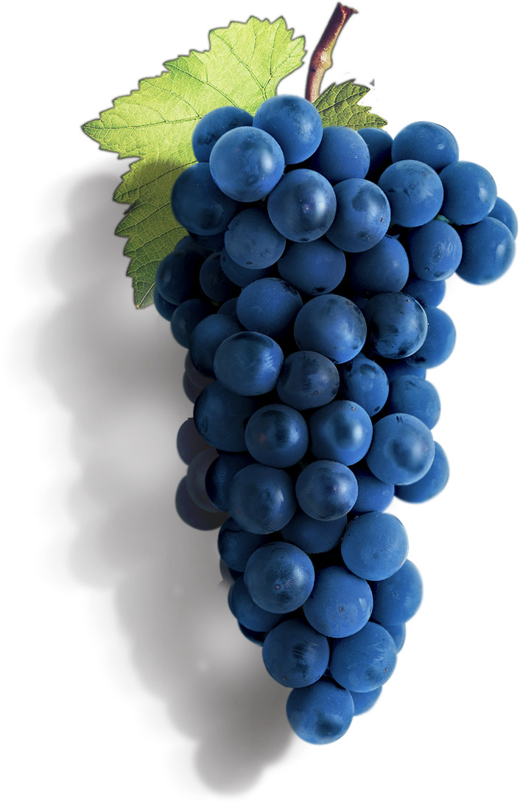

Wines
inspired by
you!
Welcome to Menada - one of Bulgaria's oldest wineries.
We strive to produce high quality wine combining 100-year-old traditions with an innovative approach.
Have a look at our product portfolio